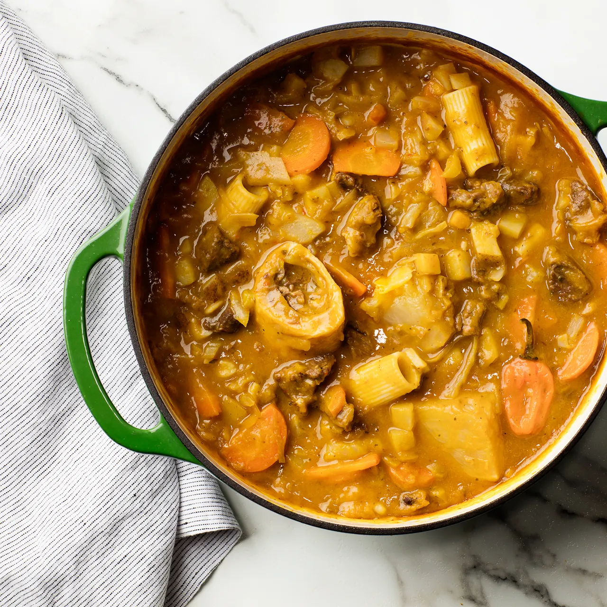

Soup Joumou

Description
Enslaved Haitians were not allowed to have this delicious and aromatic pumpkin soup, a favorite of the French who held people in slavery. On Sunday, January 1, 1804, when the enslaved gained their freedom, they celebrated with music and food in the Place d’Armes, in the city of Gonaives. And what better way to celebrate than to eat the very thing they were unable to eat under slavery? Nowadays it doesn’t matter where in the world a Haitian might be on January 1—they will be having the soup of freedom.
Ingredients
- 1 pound of stew
- 3 tablespoons fresh lime juice
- 15 cups beef or vegetable broth, divided
- 3 carrots
- 1 green Scotch bonnet or habanero chile
Preparation
- Pour 1 cup vinegar into a large bowl. Swish beef shank and stew beef in vinegar to rinse. Transfer beef to a colander and rinse with water.
- Stir Epis Seasoning Base, lime juice, and seasoned salt in another large bowl. Add beef, toss to coat, and let marinate at least 30 minutes, preferably overnight.
- Heat 5 cups broth in very large stock pot over medium. Add marinated beef and bones, cover, and simmer until meat is beginning to soften, about 40 minutes.
- Add squash to pot on top of beef, cover, and return to a simmer. Cook until squash is fork-tender, 20–25 minutes. Using tongs or a slotted spoon, transfer squash to a blender. Add 4 cups broth and purée until smooth. Return to pot and bring to a simmer.
- Add potatoes, carrots, cabbage, onion, celery, leek, turnips, chile, rigatoni, cloves, garlic powder, onion powder, 2 1/2 tsp. salt, 1/2 tsp. pepper, a pinch of cayenne, parsley, if using, thyme, if using, and remaining 6 cups broth. Simmer, uncovered, until pasta and vegetables are tender, 30–35 minutes.
- Add oil, butter, and remaining 1 Tbsp. vinegar. Reduce heat to medium-low and simmer until beef is very tender, 15–20 minutes more.
Home Page